四大事务所效应
概述
本章考察四大事务所的客户风险差异、选择与预警机制、换所检验及财报信息的市场反应。客户群差异和认证机制线索较明确，但同一客户换入四大后的改善并不一致。
核心结果
四大客户在截面上表现出更低的审计失败率，且市场对其财报信息给予更强的认证溢价；但客户进退与预警后的风险差异表明，这一优势很大程度上由“客户筛选与风险组合动态调整（client selection & portfolio rebalancing）”驱动，而非对同一客户带来无差异的增量治理改善。
核心实证发现：
- 审计失败率显著分层。 全样本中，四大、本土八大与其他事务所的综合审计失败率分别为 2.33%、6.60% 和 8.71%。在标准无保留意见子样本中，四大的失败率依然显著更低，表明这一差距并非仅由出具意见的类型构成差异所致。
- 市场对正向财报信息的认证溢价。 在使用公告前 180 天内分析师预测的样本中，四大和本土八大客户的正向盈余惊喜（earnings surprise > 10%）对应着显著更强的公告期股价反应；而在使用较旧分析师预测的样本中，未能显现类似的分层模式。
- 风险意见驱动客户进退与预警缓冲。 四大客户收到重大审计意见（MAO）后，次年退出四大的概率显著上升 35.16 个百分点；非四大客户收到 MAO 后，次年进入四大的概率下降 0.293 个百分点。对于已被出具风险预警（MAO 或持续经营不确定性 GC）的存量客户，四大客户在次年的违规发生率分别显著低 5.30 和 8.87 个百分点。
- 换所证据揭示筛选而非治疗效应。 企业换入四大后承担了显著的审计费用溢价（对数费用增加约 0.370，换出减少约 0.242）；但在静态与动态双向固定效应模型下，同一企业换入四大后在财务重述与应计盈余质量上未出现持续且一致的改善，表明截面上的高质量更多体现为高质量客户与高声誉事务所的匹配结果。
Panel A 考察风险预警对四大客户退出与非四大客户进入的动态影响：
\[ \operatorname{Transition}_{i,t+1} = \beta M_{it} + \mathbf{X}_{it}'\gamma + \alpha_i + \lambda_{j(i,t),t} + \varepsilon_{it}. \]
Panel B 在全样本中检验四大与风险审计意见的交互效应：
\[ Y_{i,t+h} = \beta_B Big4_{it} + \beta_M M_{it} + \beta_{BM}(Big4_{it} \times M_{it}) + \mathbf{X}_{it}'\gamma + \alpha_i + \lambda_{j(i,t),t} + \varepsilon_{it}, \qquad h \in \{0, 1\}. \]
其中 \(M_{it}\) 分别为出具重大审计意见（MAO）或持续经营不确定性意见（GC）的指示变量；\(\beta_B + \beta_{BM}\) 捕捉已获风险预警客户在四大下的增量违规与失败差异；\(Y\) 分别对应当期审计失败、次年公告违规或次年财务重述。两式均控制公司固定效应（firm FE, \(\alpha_i\)）与行业×年份固定效应（industry-year FE, \(\lambda_{j(i,t),t}\)），并在公司层面聚类标准误。
市场反应事件研究设定。 基于盈余公告日前后的日度交易数据，估计正向盈余惊喜对对数股价的动态冲击：
\[ \log P_{i,t,d} = \sum_{k \ne -1} \beta_k^g \bigl(S_{it} \times \mathbf{1}\{\tau_{itd}=k\}\bigr) + \alpha_{it}^g + \lambda_{\tau_{itd}}^g + \delta_d^g + \varepsilon_{itd}, \qquad G_{it}=g. \]
\(S_{it}\) 为正向盈余惊喜处理组（实际盈利超出分析师最新预期 10% 以上，对照组为预测误差在 \([-10\%, 10\%]\) 区间）；\(g\) 分别对应四大、本土八大与其他事务所组别。模型吸收公司×年份固定效应、事件时间固定效应与交易日固定效应，标准误在公司×年份层面聚类。
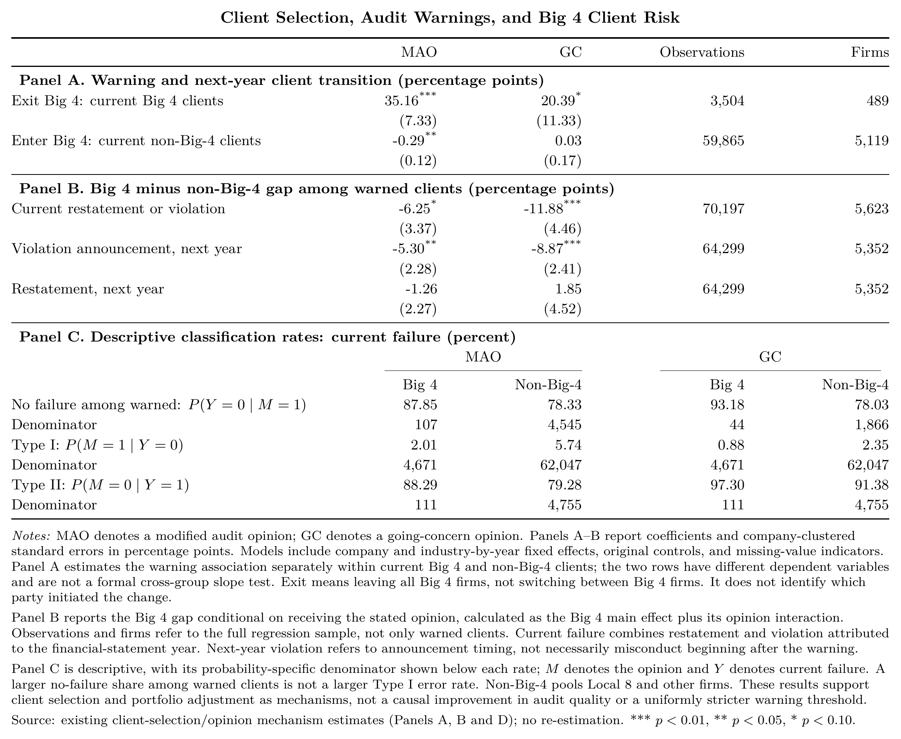
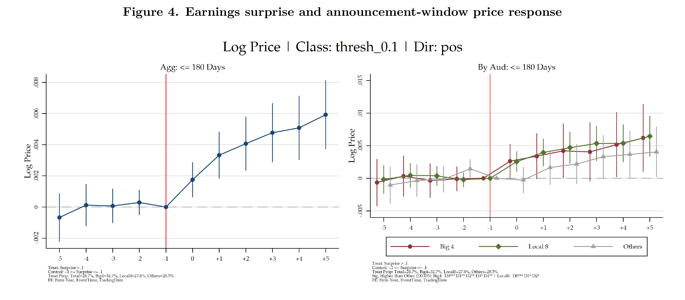
客户选择全部面板 · 完整市场图与认证讨论 · 全部换所与稳健性尝试
样本与基准控制变量。 实证分析基于 1990—2024 年 A 股上市公司非平衡面板。控制变量集统一定义如下：\(C_F\) 包含规模（size）、杠杆（lev）、亏损指示（loss）、资产回报率（roa）、Altman Z-score（zscore）、杠杆变动（chg_lev）、年报披露时滞（report_lag）、经营现金流（cfo）与上市年限（age）；\(C_M\) 在 \(C_F\) 基础上加入外部融资需求（financing）与滞后一期持续经营意见（L.gc）；\(C_E\) 额外包含营业收入增长率、账面市值比与操纵性应计利润；\(C_A\) 为基准规模与经营财务指标；\(C_V\) 在 \(C_F\) 基础上补充市值与成长性指标。变量缺失值采用行业—年份中位数结合全样本中位数填充，并引入缺失指示变量。
事务所差异与换所模型。 截面基准设定为 \(Y_{it} = \beta Big4_{it} + \mathbf{X}_{it}'\gamma + \text{FE} + \varepsilon_{it}\)。换所分析设定为 \(Y_{it} = \theta D_{it}^{up/down} + \mathbf{X}_{it}'\gamma + \alpha_i + \lambda_{s(i),t} + \varepsilon_{it}\)，区分单向换入（以持续聘用非四大为对照）与换出（以持续聘用四大为对照）样本，要求发生前后具备连续观察期，标准误按公司层面聚类。
1. 中国审计市场的分层
将事务所分为 Big 4、Local 8 和 Other。按审计费用衡量的份额展示市场结构随时间的变化；质量比较则以公司年度为单位。两种权重回答不同问题，收费份额不能直接视为质量份额。
回归／统计设定。 市场份额、三基线趋势为描述统计；类型比较表按自己的回归设定解释。原始输入 71,584 不等于每个结果有效 N；覆盖差异保留。 变量与回归设定。

四大客户在规模、审计费用及风险结构上明显不同。由此，四大与其他事务所的结果差异可能同时来自客户选择、审计服务和事件被发现的过程。以下先展示差异，再检验能否把它归因于事务所转换。
市场长期趋势
本节估计全市场审计质量的宏观趋势。对每个指标 \(m\) 和每个基线样本 \(s\)，模型为：
\[ Y^m_{it}=\alpha_i+\sum_{\tau\neq2000}\eta^m_{\tau,s}\mathbf{1}\{Year=t\} +X_{it}'\gamma_m+\varepsilon^m_{it}. \]
系数以 2000 年为零点，吸收客户公司固定效应，并按客户公司聚类。三条线分别对应：
- 全部非平衡活跃公司—年度；
- 长期存续基线：2000 年出现、并在 2000—2024 年间至少有 22 个观测的公司；
- 本地五年连续基线：在当年 \([t-2,t+2]\) 窗口内连续出现的公司（边界年份相应缩短窗口）。
三基线的目的不是制造三种规格，而是检查退出、上市和暂时缺失是否改变宏观趋势。它们不能识别审计制度或事务所类型导致的变化。
审计失败趋势
综合失败率在三个基线下都显示 2008 年后上升、2016—2018 年达到较高水平、随后回落的非单调模式；但长期存续样本的上升幅度更大。2024 年全样本和本地五年基线低于或接近 2000 年，而长期存续样本仍高于基年。这说明“全市场审计失败是否长期恶化”不能由单一平衡样本的曲线回答。

重述与违规的图提供了同一结果的两个组成部分。它们应与综合失败率一起读：单个组成指标的变化可能来自监管披露、识别概率或记录覆盖的变化，而不单是审计质量本身。


盈余管理指标与覆盖率
Jones 异常应计绝对值也按同一三基线估计。它可用于判断财务报告质量的宏观变化是否与事后失败的走势一致，但不是对重述或违规的替代。

违规、重述、综合失败、MAO 和 GC 在该样本中的年度覆盖率为 100%。审计收费在 2000 年仅覆盖约 46%，2012 年后接近全覆盖；Jones DA、REM 与保守性等指标的覆盖率则在样本期内明显波动。因此，费用和盈余管理指标的长期图必须与覆盖率一起解释，不能把早年缺失或样本构成变化读为质量趋势。

其他结果：事务所类型比较
四大客户也明显不同：其非标意见率为 2.24%，低于本土八大的 4.51% 和其他事务所的 9.44%；审计费均值约为本土八大的 3.7 倍，客户市值均值约为本土八大的 6.9 倍。异常应计的组均值较低，但真实盈余管理绝对值与另外两组接近。客户规模和风险结构差异足以影响上述简单比较。

2. 核心事实：四大客户的审计失败更少
这里的“未预警失败”是在全部有效公司年度中，发生重述或违规且当年未收到非标审计意见的联合事件，对应的发生率为 \(P(\mathrm{AnyFailure}=1,\ \mathrm{MAO}=0)\)。其中 \(\mathrm{AnyFailure}=1\) 表示重述或违规；重述与违规单项分别用相同形式定义。分母是全部有效公司年度，没有按审计意见筛掉观测。它也不意味着审计师对该项事件完全没有其他形式的提示。重述按被重述的会计年度匹配，违规按违规涉及年度匹配。
回归／统计设定。 类型差异及未预警联合失败指标的条件关联，不等于换所处理效应。基础模型的三套 FE、C_F 控制组与客户聚类见本章设定；AKM 排序另说明其识别网络。 变量与回归设定。
描述性比较呈现三类事务所的客户群；失败指标与其他结果的有效样本数不同。回归中的四大客户系数分别在行业×年份、公司与年份、公司与行业×年份固定效应下估计；换入四大的处理组与始终非四大客户比较，换出组与始终四大客户比较。换所组要求换所前连续三年、从换所年起连续三年保持事务所类型。固定效应和控制变量减少部分可观测差异，但换所本身仍可能回应客户风险、融资或治理变化。
以下英文表是结果展示；每节先说明能够从表和图读出的结论，再呈现完整估计。二元结果的系数乘以 100 后按百分点理解。
重述何时被发现
重述并不一定在被重述的会计年度公告。下图所示的实质性盈余调整记录，多数在对应会计年度之后一至三年才公告。因此，表中的重述率是按被重述年度归属的事后结果，不能解释为审计报告当时已经公开的信息。该图使用有公告日期且存在盈余调整的原始重述记录，按公司和被重述年度保留最早公告；它不是下表全部 Restated 公司年度的分母，也不分事务所类型。图中的‘0 年’按公告所在日历年的月份分组。

审计失败：事务所类型与审计意见样本
四大客户的事后失败发生率最低。全意见样本中，综合失败率为四大 2.33%、本土八大 6.60%、其他事务所 8.71%；未出具非标意见且发生失败的比例依次为 2.04%、5.49% 和 6.60%。重述、违规及其严重事件指标大体维持相同排序。即使只看标准意见客户，综合失败率仍为 2.08%、5.73% 和 7.18%。这些是客户群的描述差异，包含客户选择。
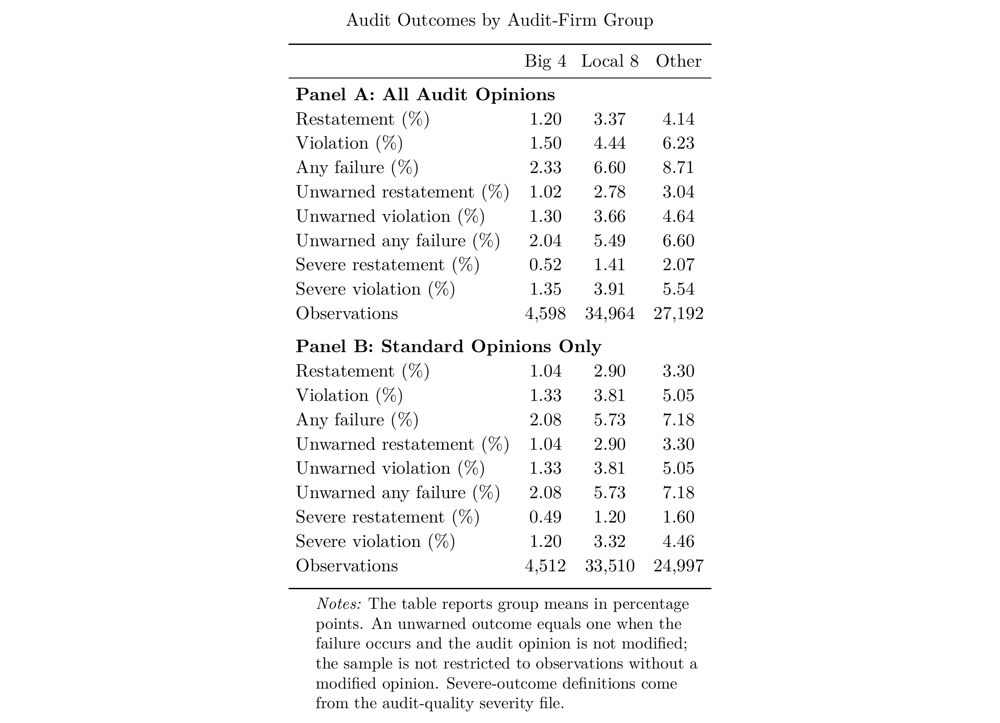
重述与违规：跨年份总体比较
两张图均显示四大、本土八大、其他事务所的发生率依次上升。重述图中，三组总体重述率分别为 1.04%、2.90% 和 3.30%；会计差错与违规类重述也呈现相同排序。违规图中，三组发生率分别为 1.37%、3.76% 和 4.68%。这些是客户群的描述性差异。
样本口径： 下图汇总各年份，没有按 2013 年前后拆分，但两图均仅纳入标准无保留意见样本，衡量的是该意见样本中的事件发生率，不是全部审计意见样本的发生率，也不是全样本中的“失败且未预警”联合概率。重述图覆盖 2001—2024 年。图与前表的样本构建口径不同，数值不作直接替代。


本节的结论是客户群排序。 重述和违规衡量已记录的事后报告失败；较低发生率不自动意味着把同一客户交给四大就会改善同样幅度。后文的换所检验专门讨论这一问题。
AKM 分解进一步考察客户与事务所的质量排序，帮助区分不同来源的差异；排序本身不识别事务所的因果贡献。
客户与事务所的 AKM 排序
本节改用更新后的事务所排序 AKM 结果，替代旧版审计师边界图。这里的目标不是估计签字审计师个人效应，而是在公司、事务所和年份三类固定效应共同进入模型后，描述事务所质量差异与客户选择之间的排序关系。
对结果 \(Y_{ift}\)，估计：
\[ Y_{ift}=X_{it}'\gamma+\alpha_i+\psi_f+\lambda_t+\varepsilon_{ift}, \]
其中，\(\alpha_i\) 是客户固定效应，\(\psi_f\) 是事务所固定效应，\(\lambda_t\) 是年份固定效应。图中的横轴为事务所固定效应，纵轴为该事务所客户的等权平均客户固定效应；二者的对应关系用于展示客户排序与事务所质量的联合分布，而非因果处理效应。
可识别样本与事务所固定效应
只有在同一事务所内观察到足够的客户—年份信息、且固定效应连通时，事务所固定效应才有可比性。下图显示满足识别要求的事务所客户数分布；四大和本土八大通常拥有更多满足条件的客户，其他事务所的有效客户数高度偏斜。因此，任何跨事务所比较都需要报告样本限制，不能把小样本事务所固定效应与大型事务所同等解释。

综合失败、重述与违规
以“未被非标意见预警的综合失败”为核心结果，事务所层面的组间对比显示：四大相对其他事务所的估计差异为 \(-0.0345\)（p=0.001），本土八大相对其他事务所为 \(-0.0153\)（p=0.020），四大相对本土八大为 \(-0.0192\)（p=0.048）。因此，综合失败是 AKM 排序结果中最完整且最精确的质量差异。
对违规，四大相对其他事务所的差异为 \(-0.0270\)（p=0.002）；本土八大相对其他事务所为 \(-0.0111\)（p=0.057），四大相对本土八大为 \(-0.0159\)（p=0.053）。违规结果支持相同排序，但后两项只在 10% 水平边缘显著。
对重述，四大相对其他事务所的差异为 \(-0.0129\)（p=0.058），而本土八大及四大—本土八大差异均不精确。因此，重述不应单独承担本节的主结论；它可以作为与综合失败和违规方向一致、但精度较弱的补充证据。


异常应计的补充证据
对 \(|DA^{Jones}|\)，四大相对其他事务所的事务所固定效应差异为 \(-0.0083\)（p=0.022）；本土八大相对其他事务所不显著，四大相对本土八大的差异为 \(-0.0092\)（p=0.009）。这与综合失败和违规的排序一致，但该指标基于模型化的应计估计，证据权重应低于事后失败结果。

这些 AKM 结果是事务所质量差异和客户排序的强描述性证据。它们不能单独区分“优质客户选择四大”与“四大提高审计质量”；该区分仍应由本页的转换事件研究、匹配设计或外生冲击承担。
关于四大采用、客户—事务所—审计师匹配及三层 AKM 的完整梳理，分别见四大采用、匹配关系和三维 AKM。
3. 市场是否区别对待财报信息
事后失败之外，市场反应提供另一种观察角度：当业绩高于预测时，投资者对不同事务所客户的财报是否作出不同反应？图中使用正向盈余惊喜大于 10% 的公司年度为处理组，惊喜在 −10% 至 10% 之间为对照组，较大的负向惊喜不进入这项比较。惊喜的定义为：
回归／统计设定。 对数股价、正向惊喜 >10% 与 ±10% 对照，事件窗 −5 至 +5，基期 −1；按预测信息时效分组。公司×年份、事件时间及交易日 FE，公司×年份聚类；历史图与当前脚本命名差异、实际 N 和控制情况见下文待核验说明。 变量与回归设定。
\[Surprise_{it}=\frac{EPS_{it}-MedianForecast_{it}}{|MedianForecast_{it}|}.\]
结果变量为对数股价，横轴为财报公告前后五个交易日，以公告前一交易日（k=−1）为基期；模型吸收公司×年份、事件时间和交易日固定效应，标准误按公司×年份聚类。图中的“180 天”区分分析师预测的信息窗口，不是公告后持有期。
回归设定核验补充。 当前 63 号脚本 FE1 命令为 \(\log P_{i,t,d}=\sum_{k\ne-1}\beta_k(S_{it}\times 1\{\tau=k\})+\alpha_{it}+\lambda_\tau+\delta_d+u_{itd}\)；\(S\) 为正向惊喜处理组，交互模型另与事务所类别交互。当前执行命令没有加入已声明但未引用的 controls_main，不能据变量声明写成已控制规模、波动率等。当前图名后缀为 FE1_NoTrend，网页保存的旧图为 FE1，因此旧图实际控制和窗口完整性、估计 N 及年份须结合历史执行日志核验；在核验前以上方程只作为当前代码设定，不能冒充已确认的旧图规格。

在有 180 天内预测信息的样本中，公告后四大和本土八大的正向价格路径高于其他事务所。 图下注明的组间检验显示，四大在 D0—D4、本土八大在 D0—D2 的部分时期高于其他组。更早预测信息组没有相同模式，不能把上半图结论推广到所有预测窗口。
这一结果与市场对财报可信度进行差异化评价相一致，也可能反映客户的信息环境、增长机会和预测覆盖差异。它不是随机聘任四大的价格效应，也不是传统连续盈余惊喜斜率的单一 ERC 估计。
样本为 2002 年起、公告窗口完整的公司年度；正向惊喜样本与较早预测信息样本分别解释。
1. 从财报生产质量到信息认证价值
四大可能通过客户筛选和持续监督提供“认证服务”，使市场更愿意相信其客户披露的信息。 即使换入四大后没有观察到一致的重述或违规下降，这种信息认证仍然可能具有经济价值。它将审计服务的作用从改善企业的财报生产质量，拓展至提高财报在市场中的可信度。
这一机制可以表述为：
四大有选择地承接和维持客户关系 → 四大身份传递关于客户及财报的信息 → 投资者对其披露的盈利消息赋予更高权重 → 正向 earnings surprise 引起更强的价格反应。
这条链条不要求四大必须把一个原本很差的企业“改造好”。筛选本身也可能生产信息：能够进入并维持四大审计关系，可能让外部投资者更新对企业的判断。 前提是这种选择传递了市场原本不知道的信息，而不只是重复企业规模、盈利能力等公开特征。持续监督及整条认证链条目前仍是待检验的机制，不能由几项相容的关联直接确证。
3. 财报更可信与市场奖励的具体含义
目前市场结果的准确范围是：在使用公告前 180 天内分析师预测的样本中，四大和本土八大客户的正向 earnings surprise 对应更强的公告期股价反应。 较早预测信息样本没有相同模式。完整结果见四大事务所效应第 3 节。
这与市场对财报可信度进行差异化评价相符，但尚不能解释为“四大身份本身带来估值溢价”，也不能推出企业已获得长期净收益。更强的反应针对的是盈利消息，而不是四大身份的无条件价格溢价；它也不意味着四大使企业产生更多盈余惊喜。本土八大同样有类似反应，因此认证解释可能涉及大型审计机构，未必完全属于四大。
4. 客户选择与审计意见：四大如何形成较低风险的客户组合
客户进出、预警后的风险和客户特征给出了一条连贯的证据链：四大的低失败率伴随着有选择的客户流动，而且即使收到相同类别的预警，四大客户的风险仍然较低。 在当前四大客户中，收到 MAO 与下一年退出四大的概率提高 35.16 个百分点相关（p<0.001），GC 对应提高 20.39 个百分点（p=0.073）；在当前非四大客户中，MAO 与下一年进入四大的概率降低 0.293 个百分点相关（p=0.017），GC 则没有显著关系。风险预警因此不仅体现为一份意见，也与客户在事务所梯队之间的后续流动紧密相连。退出和进入的方向共同支持客户筛选是理解四大客户组合的重要机制；这里的流动衡量是否聘用任一家四大，没有区分客户主动换所与事务所终止合作。
回归／统计设定。 机制 A 的控制为 C_F，B、C 为 C_M；公司及行业×年份 FE、公司聚类。特征比较 E 为行业加年份 FE、无额外控制；分类概率 D 是描述统计。不同分母和相邻年要求不能省略。 变量与回归设定。
四大的客户风险优势在已预警组中仍然存在，最明确地体现为更低的次年公告违规概率。 在公司及行业×年份固定效应、控制变量相同的回归中，已收到 MAO 的四大客户当期综合失败概率比非四大低 6.25 个百分点（p=0.064，属于 10% 水平的证据），次年公告违规概率低 5.30 个百分点（p=0.020）；已收到 GC 的相应差异为低 11.88 和 8.87 个百分点（p 分别为 0.008 和小于 0.001）。在未收到相应意见的客户中，四大的当期失败概率也低约 2 个百分点，次年公告违规概率低约 0.8—0.9 个百分点。也就是说，四大客户较低的失败风险并不是仅由“有没有收到非标意见”的构成差异造成，同一意见状态下仍可观察到明显差距。次年重述的组间差异均不显著，这条证据主要集中于综合失败和公告违规，而非所有未来负面结果。
客户财务状况的比较进一步支持这种风险构成差异。 在已收到 MAO 的客户中，四大的亏损概率低 8.70 个百分点（p=0.042），当期公告违规概率低 4.09 个百分点（p=0.020）；在已收到 GC 的客户中，四大的亏损概率低 20.16 个百分点（p=0.011），当期重述概率低 9.76 个百分点（p=0.002）。Z-score、ROA 和杠杆没有显著差异，因此这里体现的是特定风险指标上的优势。在意见反应上，亏损对应的 MAO 概率增量在非四大为 8.44 个百分点、四大为 4.97 个百分点，二者差异为 −3.47 个百分点（p=0.031）；亏损对应的 GC 概率增量分别为 4.05 和 0.21 个百分点，四大的增量本身不显著。公告违规与 GC 的关联在四大中也更弱，斜率差异为 −3.23 个百分点（p=0.003）。这说明相同的表面风险指标在两类客户中对应不同的意见反应，与客户风险构成和审计判断共同发挥作用的解释一致。
把这些结果合在一起，最有依据的推论是：客户筛选与组合调整是四大低失败率的重要解释，预警客户较低的事后风险也与更早发出预警的解释相容；但目前没有证据把这种优势统一归结为更严格的预警阈值。 以当期综合失败为标签，四大 MAO 的标准 Type I 错误率为 2.01%，低于非四大的 5.74%；Type II 为 88.29%，高于非四大的 79.28%。GC 及次年公告违规的比较方向相同。因而，数据支持“四大客户更少失败、风险意见与客户进出相关”，不支持“通过更多假阳性换取更少假阴性”。这一结论将客户匹配放在核心位置，也解释了为什么客户群之间显著的质量差距，不一定转化为换入四大后同样明确的改善。
2. 客户筛选的证据与 MAO 的解释边界
当前结果支持客户筛选与组合调整的重要性，但尚未统一支持“四大给出更严格的 MAO”或采用更严格的预警阈值。四大客户收到 MAO 后退出四大的概率较高，但现有流动数据尚未区分客户主动换所与四大拒绝续约。因此，更稳妥的表述是：
四大客户的风险较低，风险意见与客户关系的进入、退出密切相关。这些事实与四大通过客户筛选和关系管理维护其认证价值的解释相容。
客户群风险较低、风险意见与客户流动相关，以及对同一客户的审计服务改善，是不同层次的结果。前两者可以支持认证机制的研究动机，但不能替代第三者的因果识别。完整证据见四大事务所效应第 4 节。
MAO 后换所：变更公告中的具体线索
变更公告让客户组合调整的过程更加具体：在收到四大 MAO 后转向非四大的事件中，可以看到服务评价、费用协商、任期安排、集团决策和资产重组等不同渠道。 主面板中共有 107 个四大 MAO 公司年度，其中 103 个能够观察到严格相邻的下一年；44 个下一年被分类为非四大，涉及 40 家公司，原始转换比例为 42.72%。其中 1 个后任事务所名称和 ID 缺失，43 个有明确后任。30 个事件匹配到财报审计变更记录，20 个披露了原因、10 个未披露。以下选取六个有具体解释内容的案例；年份表示 MAO 财年到下一审计财年，公告可能在次年披露，公司名称沿用当前面板简称。
- 深圳华强，2001→2002：服务评价与公司改聘决定。 数据库原因码标为“事务所辞职”，但公告文字称沪江德勤的服务“不能达到工作要求”，由公司董事会决定改聘深圳鹏城。编码与文字存在差异，但两者都把注意力引向原有服务关系的结束；这是关系调整的具体线索，尚不能据此确定由哪一方首先提出终止。
- 退市拉夏，2019→2020：费用与成本协商。 公司公告称变更基于“合理控制审计成本、减少费用开支”，另一来源写“收费分歧”。两种表述共同指向审计服务的经济条件，是 MAO 后客户与事务所未继续合作的一个具体渠道。
- 卓郎智能，2019→2020：任期与集团安排。 公司公告强调前任服务期限较长，另一来源称集团或控股股东要求更换。该案例表明，客户流动可能同时涉及任期安排与控制股东对审计机构的选择。
- 上海临港，2014→2015：重大资产重组与审计关系延续。 公告描述重组后聘用重组项目的审计机构，另一来源写合同期满。这里客户业务和资产构成的变化，为重新选择审计机构提供了具体背景。
- 新城控股，2023→2024：业务及整体审计需要。 公告以业务状况、发展需求和整体审计需要解释更换，并明确称与前任在工作安排、收费、意见等方面不存在分歧。该记录支持业务安排发生调整，但没有披露意见冲突。
- 鼎信通讯，2023→2024：长期服务、独立性与招标。 公告称安永已连续服务超过十年，并同时提及独立性、实际审计需求和招标程序，显示这次转换通过正式选聘程序完成。
这些案例说明，MAO 后的客户流动有具体的服务关系和商业安排作为背景。 “合同到期”“业务需要”等公开措辞不能完整揭示双方协商过程，不能因措辞常规就排除风险评估或合作意愿发生变化；同样，不能把这些措辞一律解释成未明说的辞任。结合回归中的退出上升和进入下降，这些材料支持将客户选择理解为双方围绕服务、费用、任期及业务安排进行的匹配与重新匹配，而不局限于单方“踢走客户”。六个案例是机制线索，未匹配和未披露部分仍保留在完整事件清单中。
查看全部事件与披露原文
综合机制表：客户流动、预警与风险构成
Table M1 将全部机制结果放在一张表中，按 Panel A—E 分页展示。A 为进入与退出，B 为同一意见状态下的结果差异，C 为风险对应的意见反应，D 为描述性分类概率，E 为已预警客户特征。A—C 使用公司与行业×年份固定效应及各模型原有控制变量；E 使用行业和年份固定效应，不另加控制变量。回归系数下为公司聚类标准误，二元结果系数乘 100 后按百分点解释；D 已用百分比表示，N 为各项概率的分母。
令 M 表示 MAO 或 GC，Y 表示所检验的负面事件。Panel B 的未预警组差异为 \(\beta\)，已预警组差异为 \(\beta+\delta\)，已预警组未失败差异为 \(-(\beta+\delta)\)；三项均使用同一回归协方差矩阵计算标准误，后两项互为相反数。Panel D 分别报告 \(P(Y=0\mid M=1)\)、\(P(Y=1\mid M=0)\)、\(P(M=1\mid Y=0)\) 和 \(P(M=0\mid Y=1)\)。没有记录到指定事件不等同于财务报表完全无误。
完整综合表 PDF · 英文 LaTeX · 完整估计与置信区间


5. 识别检验：换入和换出四大后是否改善
横截面和意见结果揭示了选择问题；转换设计进一步比较同一公司更换事务所类型前后的变化。然而换所本身可能由风险、融资或治理变化触发，固定效应并不能自动排除这种选择。
回归／统计设定。 换入与换出分开构造，前 3 年和当年及后 2 年保持规定类型。TWFE、SA、CS-DID、多期变化和堆叠保留各自目标与对照，不能以统一公式替代；费用使用 C_A，市值使用 C_V。各方法实际窗口、权重和执行状态以原完整表／日志为准，缺失信息待核验。 变量与回归设定。
未预警失败：四大客户差异与换所 DID
加入公司及行业×年份固定效应后，四大客户的未预警综合失败概率低 1.97 个百分点，违规低 1.88 个百分点；重述差异仅为 −0.43 个百分点且不显著。换入四大的 DID 平均系数分别为综合失败 −2.66、违规 −2.01 个百分点，重述为 −0.92 个百分点且不显著。前两个平均系数有统计显著性，但能否解释为质量改善取决于换所前趋势；下文动态结果没有给出一致支持。
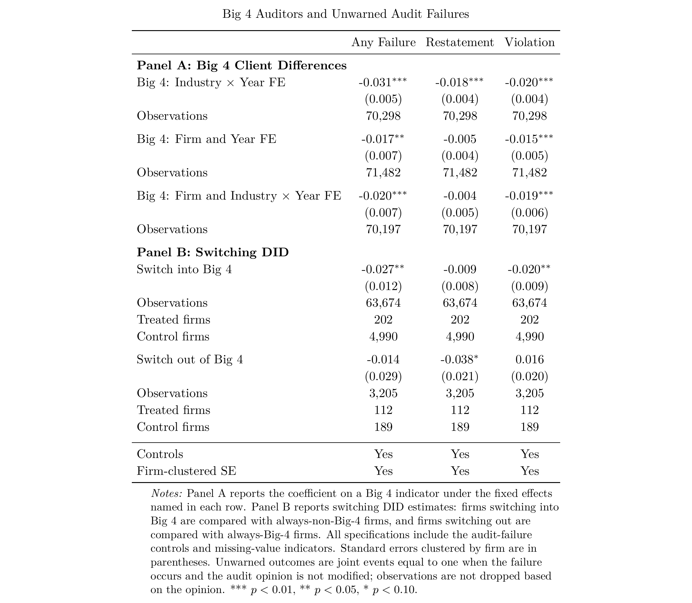
静态平均系数与动态证据需要一起阅读。 主分析的换入综合失败和违规平均系数为负，但逐期区间、换所前走势和替代估计器未给出一致确认。换出四大后也没有稳定、对称的失败上升。完整事件图和逐期表保留在后文，不能只保留显著的平均系数。
动态路径与稳健性
静态 DID 汇总换所前后的平均差异；动态路径检验变化是否真的从换所时开始。下图以换所前一年为基期，竖线表示换所年，误差棒是估计区间。各方法的样本、权重和可用对照不同，重点看处理前差异、处理后方向及估计精度是否一致。
TWFE
换入后的综合失败点估计多为负，但各事件期的 95% 区间均跨零；换入前两年的重述系数已经为 −2.3 个百分点且区间不跨零。换出后也没有稳定的反向上升。静态 DID 的显著均值因此不能替代动态路径检验。
TWFE：未预警的重述或违规，换入四大

TWFE：未预警的重述，换入四大

TWFE：未预警的违规，换入四大

TWFE：未预警的重述或违规，换出四大

TWFE：未预警的重述，换出四大

TWFE：未预警的违规，换出四大

TWFE：逐期估计

Sun–Abraham
换入后的综合失败、重述和违规系数均接近零，没有形成 TWFE 所暗示的持续下降。换出后若干远期点估计较大，但标准误也大，不能当作反向验证。
Sun–Abraham：未预警的重述或违规，换入四大

Sun–Abraham：未预警的重述，换入四大

Sun–Abraham：未预警的违规，换入四大

Sun–Abraham：未预警的重述或违规，换出四大

Sun–Abraham：未预警的重述，换出四大

Sun–Abraham：未预警的违规，换出四大

Sun–Abraham：逐期估计

Callaway–Sant’Anna
换入后的平均综合失败效应为 −1.46 个百分点，95% 区间为 [−4.82, 1.90] 个百分点；平均违规效应为 +0.23 个百分点。该估计与“明确降低失败”的结论不一致。
Callaway–Sant’Anna：未预警的重述或违规，换入四大

Callaway–Sant’Anna：未预警的重述，换入四大

Callaway–Sant’Anna：未预警的违规，换入四大

Callaway–Sant’Anna：未预警的重述或违规，换出四大

Callaway–Sant’Anna：未预警的重述，换出四大

Callaway–Sant’Anna：未预警的违规，换出四大

CSDID：平均事前与事后效应

de Chaisemartin–D’Haultfœuille
换入后综合失败在第 1 至 3 年的点估计约为 −2 至 −3 个百分点，但逐期区间跨零；违规在换入前第三年已有显著差异。换出路径同样缺乏精确的反向变化。
de Chaisemartin–D’Haultfœuille：未预警的重述或违规，换入四大

de Chaisemartin–D’Haultfœuille：未预警的重述，换入四大

de Chaisemartin–D’Haultfœuille：未预警的违规，换入四大

de Chaisemartin–D’Haultfœuille：未预警的重述或违规，换出四大

de Chaisemartin–D’Haultfœuille：未预警的重述，换出四大

de Chaisemartin–D’Haultfœuille：未预警的违规，换出四大

de Chaisemartin–D’Haultfœuille：逐期估计

堆叠事件研究
综合失败换入后的点估计仍偏负，但各期区间跨零；重述在换入前第二年已偏低。这与 TWFE 的事前排序问题一致，不能视为独立的因果确认。
堆叠事件研究：未预警的重述或违规，换入四大

堆叠事件研究：未预警的重述，换入四大

堆叠事件研究：未预警的违规，换入四大

堆叠事件研究：逐期估计

换入四大稳健性
按市值加权或排除较小的对照公司后，综合失败的处理后点估计仍多为负，却没有精确的逐期下降；排除小公司后的重述在处理前两年仍显著偏低。稳健性处理没有消除核心识别疑问。
换入四大稳健性：未预警的重述或违规，排除低市值对照公司

换入四大稳健性：未预警的重述或违规，市值加权

换入四大稳健性：未预警的重述，排除低市值对照公司

换入四大稳健性：未预警的重述，市值加权

换入四大稳健性：未预警的违规，排除低市值对照公司

换入四大稳健性：未预警的违规，市值加权

换入四大稳健性：逐期估计

审计费用与费用增加
收费是最一致的换所结果：换入四大后的审计费系数为 +0.370 对数点，约对应 45% 的较高收费；换出系数为 −0.242 对数点。费用增加额的转换系数同向，但其对数定义和样本不同，不宜直接写成普通百分比。价格反应清楚，仍不能单凭价格证明审计质量提高。

公司市值
换入四大后市值对数高 0.104，约为 11% 的差异；换出估计为负但不显著。市值会同时反映融资、经营和选择换所的消息，因而这项关联不是审计质量的直接检验。
6. 其他审计质量指标与局部证据
回归／统计设定。 盈余管理使用 C_E，严重程度及子样本使用其原失败设定；ROE 门槛与 REM 交互按表内变量定义。分组均值、隐含资本成本与回归结果分开解释，不能统一成同一服务效应。 变量与回归设定。
应计和真实盈余管理
换入四大后，Jones 异常应计绝对值和真实盈余管理绝对值几乎没有变化；DD 异常应计绝对值反而上升 0.034（p=0.006）。横截面上某些指标较低，但公司内及换所规格不支持盈余管理普遍下降。

ROE 门槛附近的四大客户差异
门槛结果随阈值改变方向：0% 附近无显著差异，6% 附近四大客户的达标指标高 9.56 个百分点，10% 附近则低 16.50 个百分点且仅边缘显著；10% 窗口中的四大观测只有 24 条。这组结果无法支持四大普遍抑制门槛操纵。

ROE 门槛与盈余管理交互
在 0% 窗口，四大×达标与有符号真实盈余管理的系数为 −0.129；10% 窗口则为 +0.097，合并门槛的对应交互项接近零。多个门槛和多种盈余指标的方向不一致，单独挑选显著交互项会夸大证据。

真实盈余管理分项及存货减值
配股门槛窗口中，异常经营现金流、异常费用和异常生产成本的四大交互项均不显著。四大客户的存货跌价准备比率在全样本中较高 0.0165，但它也可能反映资产结构和会计政策差异；目前不能把这一单项结果归为审计质量改善。


门槛结果的解释范围。 0% 窗口的 −0.129 是有符号 REM 的交互项；同一窗口绝对值 REM 的交互项约为 +0.009（p=0.834）。不能把前者直接写成操纵幅度下降。配股门槛窗口的异常酌量性费用四大主效应为 +0.0188（p=0.001），它是门槛下侧基准组的条件差异；与较少异常削减费用相一致，但没有直接识别阻止削减研发或广告的行为。存货减值差异在全样本为 +0.0165，配股窗口为 +0.0096（p=0.097），也可能反映资产结构和会计政策。
ROE 检验考察 0%、6%、10% 附近左右各一百分点的窗口：0% 窗口使用 2020 年及以前的观测，6% 窗口使用 2002 年起的观测，10% 窗口使用 2001 年及以前的观测。这些是门槛附近的局部比较，不等同于完整复现监管资格规则。
未预警失败的严重程度
严重违规的公司固定效应差异仍为负：公司及行业×年份规格为 −1.78 个百分点；换入估计为 −1.66 个百分点，仅在 10% 水平边缘显著。严重重述及被动监管、欺诈文本指标在换入后没有稳定下降。对数严重程度中，换入后的未预警违规涉及年度数系数为 −0.031（p=0.035），其余三项金额或年度数的换入系数不显著。这些结果变量包含大量零值，系数是 ln(1+x) 的变化，不能直接解释为只在违规事件中严重程度下降 3.1%。因此严重程度证据主要来自违规，尚不能推广为所有类型的严重失败都改善。


严重程度分布与公告文本信息
数值分布图展示事件涉及年数、金额及已发生事件中的严重事件占比。右侧比例以已发生违规或重述为条件，不能与全样本失败率混用；金额分布按图示剔除最高 5% 极值。

文本特征图显示，违规公告中虚增或虚构、虚减或隐瞒，以及涉及利润、收入、资产的表述都较常见；重述说明里，准则变化或合并、被动监管、主动造假或差错的关键词命中次数差异较大。这些类别可在同一事件中同时出现，柱高是文本命中事件数，不是公司年度失败率，也不能解释为四大的处理效应。文本判断为严重程度指标提供补充信息。

未预警失败：子样本 DID
三个子样本都沿用主分析的换所定义：换所前三年属于原事务所类型、换所当年及后两年保持新类型。换入系数比较符合该子样本条件的换入四大客户与始终非四大客户在换所前后的变化；换出则与始终四大客户比较。结果是全体有效公司年度中‘发生失败且 MAO=0’的概率差，系数乘以 100 为百分点；回归控制公司固定效应、行业×年份固定效应及主分析控制变量，标准误按公司聚类。表中的子样本系数并不是与其互补组系数之差。
财务困境（Financial Distress）按每个公司年度定义：当年亏损，或当年 Z-score 不高于该年度第 25 百分位。同一公司可能只在部分年份进入这个样本。换入四大的未预警重述系数为 −2.34 个百分点（p=0.024；152 家换入、2,382 家始终非四大对照），表示这些财务困境公司年度中的相对变化；综合失败和违规没有相应显著下降。由于困境状态按当年筛选，这不是一个完全由换所前特征固定的企业组。
曾发生未预警失败（Ever Unwarned Failure）指公司在整个可观察期至少有一年发生重述或违规且 MAO=0。换入组的未预警违规系数为 −6.24 个百分点（p=0.089；49 家换入、1,202 家对照），但分组可能由换所后的失败结果决定，不能据此判断既有失败客户在换入后改善；换出估计仅有 3 家对照公司。
换所前长期任期（Long Pre-Switch Tenure）要求换所前同一事务所连续服务至少五年，首次换所发生在 2023 年前；估计仅保留 2023 年以前的公司年度。对照组仍为所有始终属于相应事务所类型的公司，没有另加五年任期门槛。换入组的未预警综合失败系数为 −4.11 个百分点（p=0.044；92 家换入、4,340 家对照），违规系数为 −2.91 个百分点（p=0.079）。这是长期任期换所组相对既定对照组的结果，并未检验它是否显著不同于短任期换所组。三个子样本、三个结果和两个换所方向都被检验；这些局部显著性及主分析中尚不稳的换所前趋势，限制了质量改善的解释。

其他质量指标的分组比较
以下比较按事务所类别展示均值及约 95% 均值区间，刻画不同客户群在盈余管理、保守性及其他质量指标上的差异；不控制客户选择，证据权重低于直接的失败结果。
真实盈余管理
该比较将异常经营现金流、异常生产成本、异常酌量费用及综合真实盈余管理指标取绝对值，按公司—年份合并审计事务所。综合指标的分组均值为四大 0.157、本土八大 0.161、其他 0.157，几乎没有清晰梯度；分项也没有一致的四大优势。原始数据还按北交所、特殊处理及新上市／退市等标识筛选，因此不能直接与其他指标比较样本构成。

盈余披露质量与会计稳健性
盈余激进度的绝对值均值为四大 0.236、本土八大 0.265、其他 0.424，但其他组区间很宽；盈余平滑度均值分别为 4.729、3.790、3.678。两个指标方向并不提供同一种简单的质量排序，且平滑度的经济含义不能仅凭数值大小判断。此图使用双纵轴，跨指标高度不可直接比较。

稳健性图并列展示 ACF、Basu 和 CScore 来源指标：不同指标的组间方向并不一致，CScore 的四大组区间尤其宽。笔记本只是读取已有年度指标并分组求均值；它没有复现 Basu（1997）原文的非对称及时性回归。因此这里只能称为“借用相关稳健性指标的描述比较”，不能写成严格的文献复现或审计质量验证。

隐含权益资本成本
笔记本以分析师下一年、下两年每股收益预测和行业市盈率构造价格代理，按 PEG 公式计算隐含权益资本成本，并限制正的预测盈利增量及正价格、剔除两端 1% 的估计值。四大、本土八大和其他事务所均值分别为 0.1092、0.1107、0.1125，差异较小。该指标同时受预测覆盖、估值代理和样本筛选影响，不能把它直接解释为审计质量或资本市场对事务所的因果定价。

7. 综合判断
最清楚的事实是：四大客户失败更少；在较近期预测信息样本中，市场对四大和本土八大客户的正向盈余信息反应更强。 意见客户的风险特征与意见后的客户去留进一步显示匹配的重要性。
选择机制、换所效应与市场定价之间的联系仍待进一步识别。
尚未解决的是：同一客户换由四大审计，质量会改善多少。 换所后的失败结果不够一致，其他盈余质量指标也没有形成普遍改善的证据。收费变化较稳定，但价格不能替代质量的识别。
综合机制表表明，风险意见与客户进出方向一致，且同一意见状态下四大客户仍具有较低的失败和违规风险。客户选择与组合调整因此是解释四大质量差距的重要机制；四大的审计服务对同一客户的增量贡献，则需要结合换所结果另行判断。
4. 连接认证、可信度与市场反应的关键检验
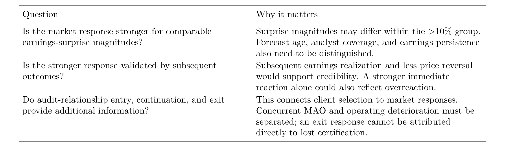
“服务提升企业的财报生产质量”和“服务提升财报在市场中的可信度”都属于审计服务的潜在价值，目前后一种解释更贴近已有市场结果。 下一步应验证“认证—可信度—市场反应”的连接，而不要求所有 audit failure 指标都显著下降，或把更强市场反应提前解释为已经识别的服务收益。
历史意见与客户选择的全部回归尝试
补充回归分别考察审计意见、预警标准、客户组合、意见信息含量、分类错误率及已预警客户的特征。以下沿用各表的历史设定，与综合机制表分别解释。
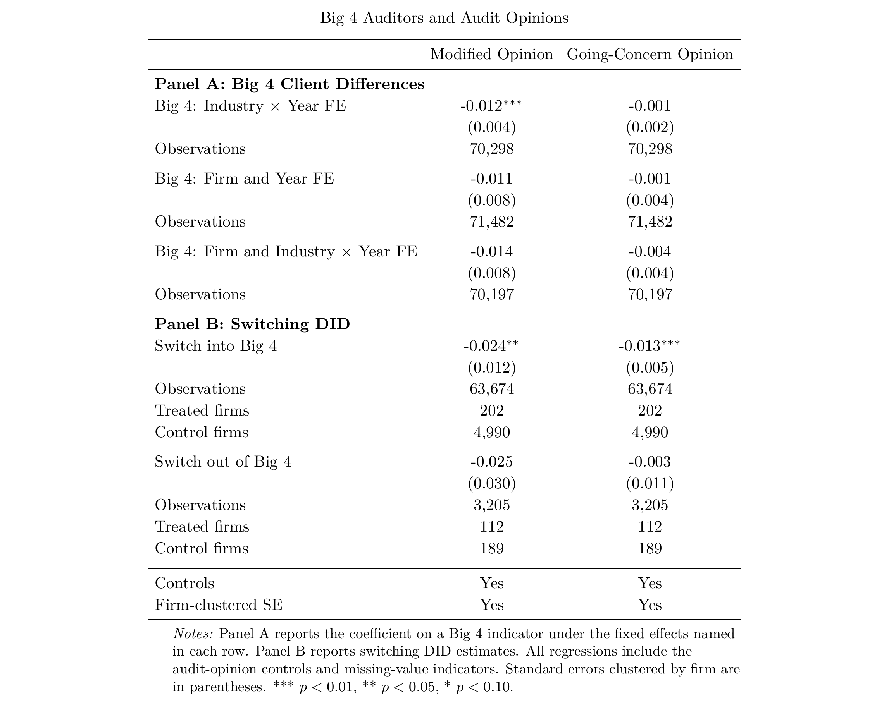
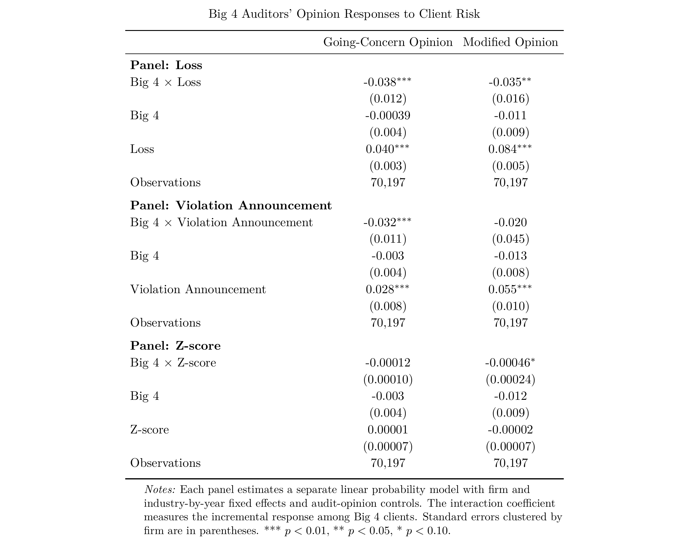
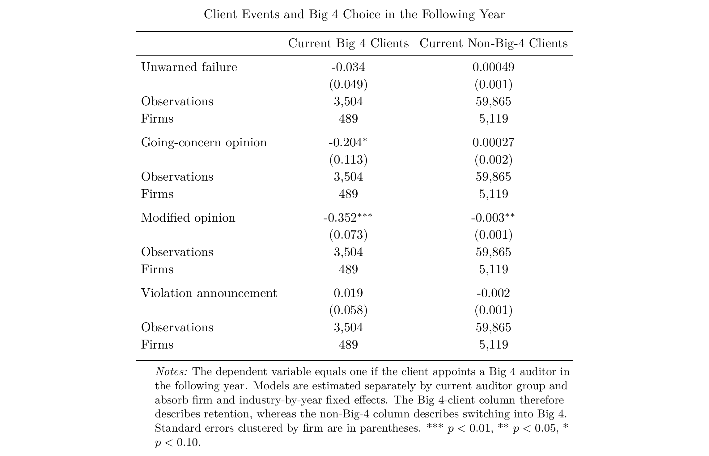
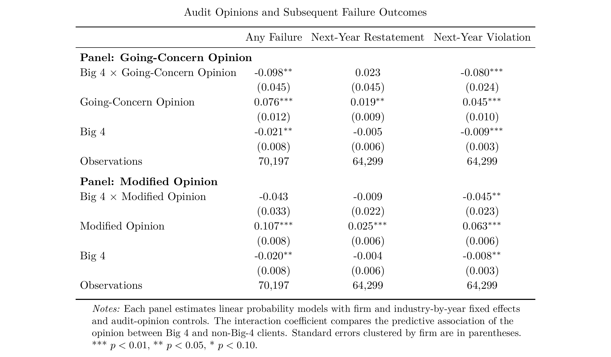
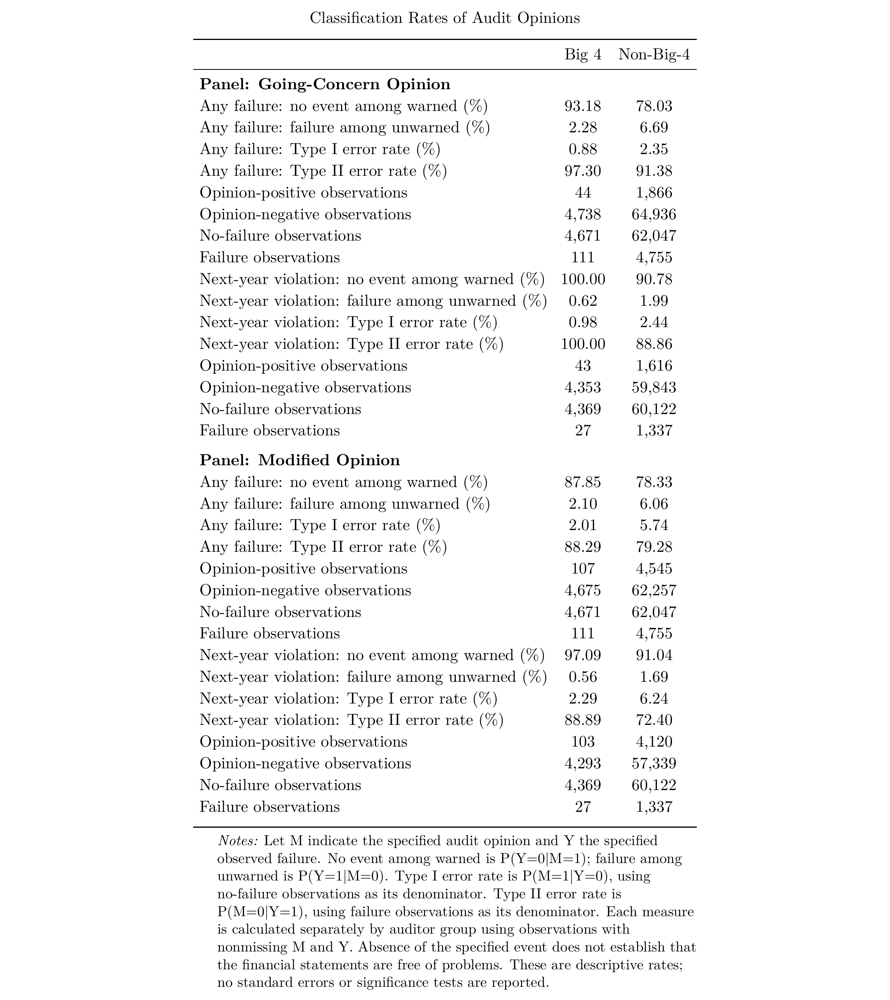
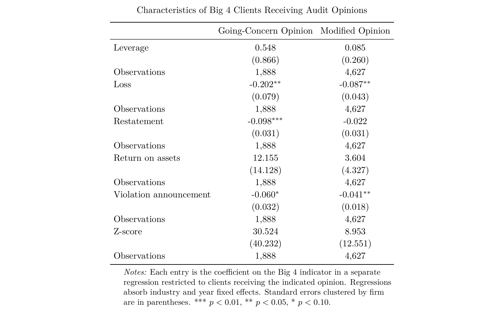
待解决问题与补充材料
仍需核验。 换所各方法的实际可识别样本和中止日志；市场图 FE1 历史文件与当前 FE1_NoTrend 命名的对应、实际 N；筛选与审计处理的区分；退出发起方、盈利消息幅度和长期净收益。
数据、程序与输出记录
估计程序（存档）。 00_big4_effect_inputs.do · 00_big4_effect_did_models.do · 26_client_selection_opinion_mechanism.do · 63_earnings_response_horizons.do